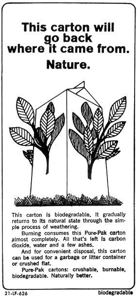

The interesting little panel sharing this page is brought to you, free of charge, by Oscar Ewing who uses it to decorate an otherwise uninformational side of his half-gallon milk carton. He hopes it will help you to buy his milk. The environment would hope (if it could hope, which it can't) that it would help you to bypass the product. The carton tells only the truth, but its message is a lie.
Let me describe the carton. It is made of sulfite pulp. The manufacturing process of sulfite pulp is so destructive to the environment that any such site can always be seen for 25 miles and smelled for 50.
The next time you see a plant belching stinking steam-staining a river yellow with its "effluent byproducts"-ten to one it has something to do with sulfite pulp. The process contributes 13% of our nation's direct water pollution. In some areas, it contributes 45% of "subjective discomfort" air pollution (it stinks). Related procedures, dependant on sulfite pulp, contribute 80% of all mercury pollution.
Contrary to public opinion, the manufacturers are not greedy, grasping, money-hungry monsters. No, they are actually dedicated, concerned, aware blunderers, just like you or me (or was it "your dad and mine"?). From reading their literature, you learn that the pulp manufacturers have spent their lives, their fortunes, and their good health trying to find a solution to the pollution their vital products produce. Since our eyes and our noses tell us they have not solved the problem, we must reduce (or not increase) the use of sulfite pulp if we want to reduce air and water pollution.
Because it is made of sulfite pulp, the carton is not something we really want in our homes. It is clear that the carton can only contain milk. When it does not contain milk, it is waste. Solid waste. The pulp fibers that this carton contains have been treated with polymers to resist water, and water is the basis of life. The carton is designed to be broken up by the forces of nature, but not by life.
If you want to destroy this carton use fire, sunlight and time. Lots of time. Do not use anything living. The carton is not edible. Don't-for that matter-use earthquake, avalanche, or wind. Waterproof milk cartons are usually the only recognizable items left after tornadoes or earthquakes. In the sense of Ewing's ad, everything is biodegradable . . . but this carton is very low on the list.
Our nation has attempted to solve the problems of solid waste, it has failed and we are in danger of drowning in our own waste. It is now time to recognize that used, worthless material is poison. Since we cannot dispose of it safely, we must therefore stop making this mistake of convenience. We must reuse everything. Our technology must be based on forever bringing forth the new from the old. We can not afford technologic waste; we must recycle.
What should you do to respond to this obscene ad? Buy your milk in glass containers (Ehrler's and Haywood's dairy stores carry them). Take the bottles back to be recycled. If you can't get to the dairy store, get a glass bottle and at the checkout stand, pour the milk from the carton into your bottle. Tell the nice man why you are leaving the pornographic, biodegradable carton behind.
The user (that's you!) is the only force that can change the direction of America. You must make the choice for all of the future of man. We are living in the last moments of decision: 5 minutes 'til twelve. If you choose life, do not use products that generate waste. Demand your right to live, and recycle.
|
 |
|
|